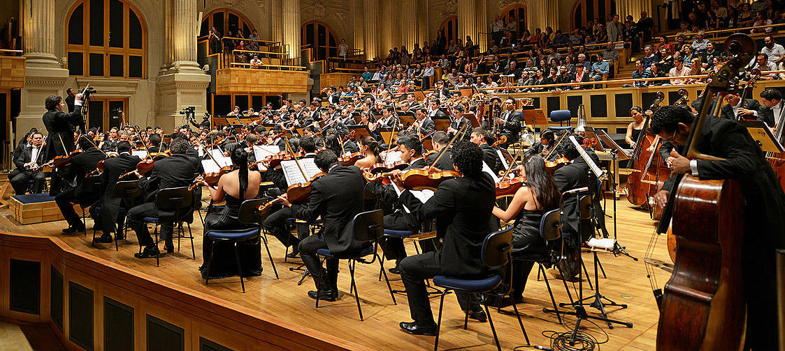

| Quick Facts | Home | Pictures | Information |
Arts and Cultural Institutions
| The government has supported creative
expression since the 1920s in an effort to preserve cultural
distinctiveness in the face of outside pressures. A thriving national
literature developed as writing and publishing became more freely
permitted. Part of this nationalistic surge was Rómulo Gallegos, who went on to become Venezuela's most famous writer and won international acclaim for his work Doña Bárbara (1929). Painters like Manuel Cabré and Armando Reverón also exhibited a strong sense of nationalism. The Central University in Caracas was designed by architect Carlos Raúl Villanueva, who received praise from all over the world for his asymmetrically organised buildings that were accented by sculptures and freestanding murals. |
.jpg) Rómulo Callegos |
|
 Venezuelan Symphony Orchestra |
The Venezuelan Symphony Orchestra, which
is funded by the government, enjoys great popularity and a patriotic
spirit in its repertory. The Simón Bolívar Youth Orchestra in Caracas,
which features some of the greatest young musicians in the nation, is
another source of tremendous pride. A portion of these performers are chosen from El Sistema, or "The System," a comprehensive orchestral training and music education programme that is offered in Venezuela. Since the program's inception in the 1970s, hundreds of thousands of children from impoverished and at-risk neighbourhoods have had the chance to participate in youth orchestras across Venezuela, where at least one professional youth orchestra exists in every state. |
| Caracas is home to the majority of
Venezuela's important cultural institutions. The 1938-founded Museum of
Fine Arts is home to a sizable collection of sculptures and paintings by
both international and Venezuelan artists. Other museums include the
Science Museum Foundation (formerly the National Museum; established in
1875), which houses exhibitions on anthropology, archaeology, and other
subjects, and the Museum of Colonial Art, situated in a mansion from the
eighteenth century. Notable museums beyond Caracas include the Museum of Military History in Maracaibo and a museum showcasing pre-Columbian artefacts in Ciudad Bolívar. With over two million volumes, many of which are rare, the National Library (1883) in Caracas is home to the most significant book collections. The modern Teresa Carreño Theatre provides a forum for international and national music and dance performances. |
 Museum of Military History |
| Page 1 | Page 2 | Page 3 | Page 4 | Page 5 | Page 6 | Page 7 |